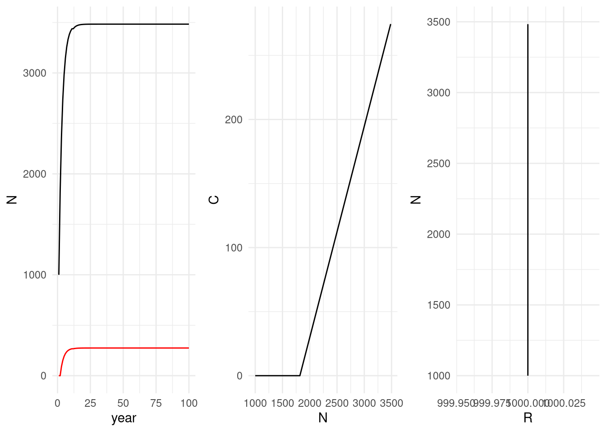
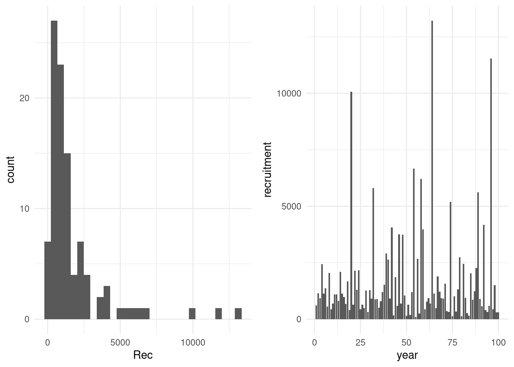
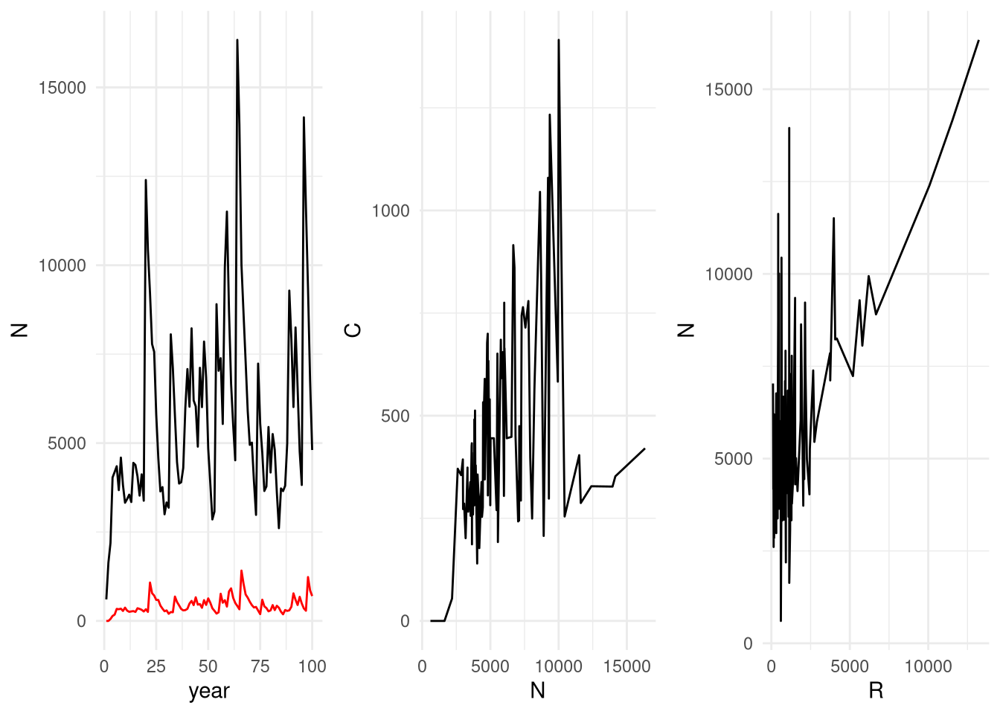
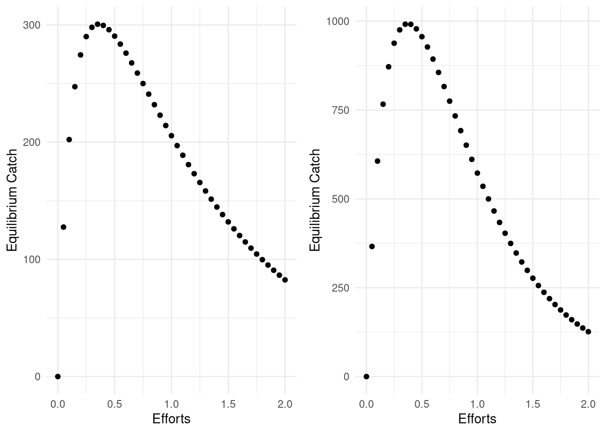
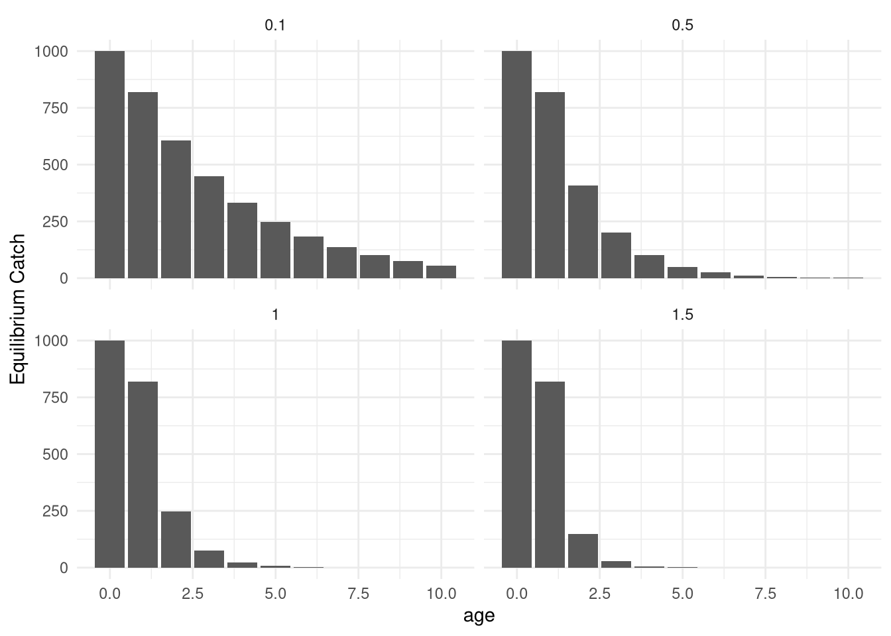
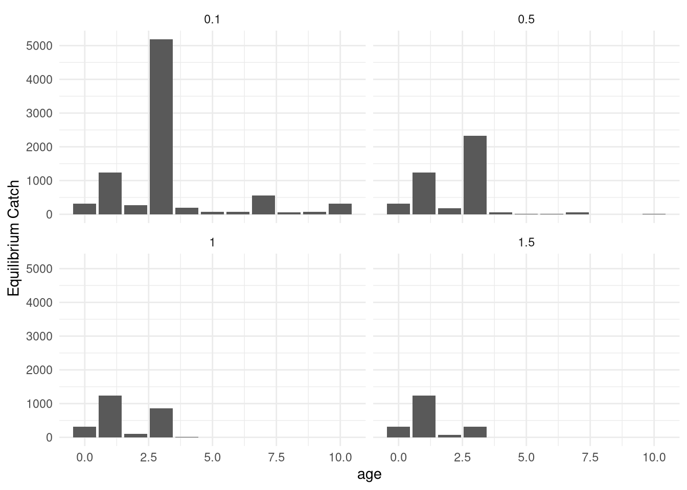
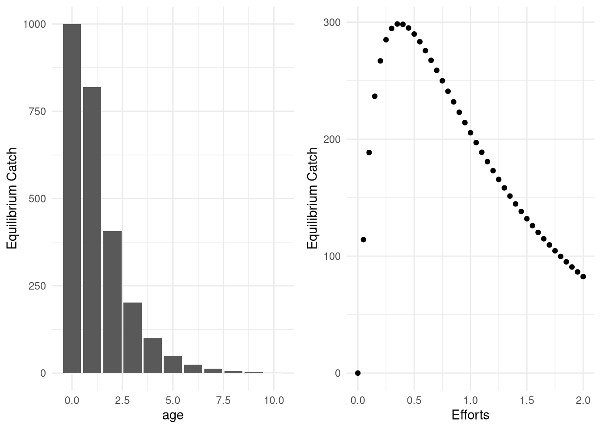
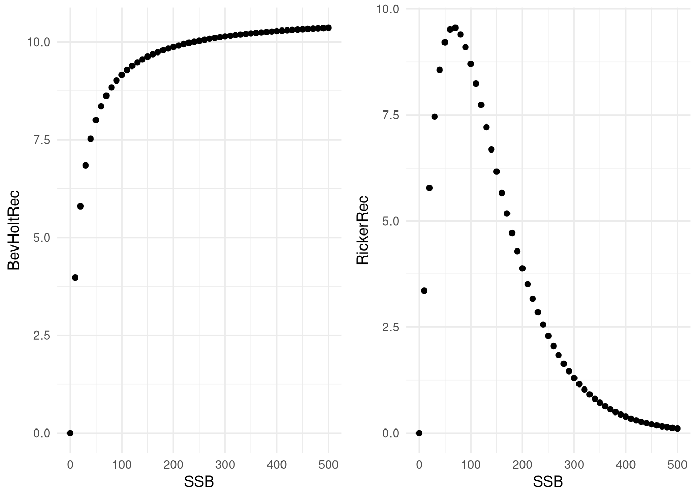

#age-based model simulation
###-----------------------Exercise 6: Put it all together into an age-structured model---------------------------
###------DO NOT INCLUDE CATCH yet
#First set the model structure
#100 years, ages 0-10
YY <- 100
AA <- 10Age-based Concepts
Age-based population dynamics
In surplus production models, the exploitable portion of the population is modeled as a single blob of biomass that grows and declines over time according to some rules (i.e., parameters). These properties of growth and decline determine the amount of sustainable catch removals (e.g., \(MSY = Kr/4\) for a Schaefer model). Using production models simplifies the biological processes greatly, and therefore cannot track true population dynamics when fitted to data as closely as more complex models that contain more parameters designed to track individual cohorts or year classes. The trade-off with adding more parameters is that more data and different types of data are needed to capture age-based dynamics.
In age-based models, the number of individuals in a cohort is estimated by tracking the numbers observed each year through time. As in production models, these numbers may on average grown or declined, but this change is dependent on biological processes that are explicitly modeled, like mortality, reproduction, and body growth. Therefore, the intrinsic growth rate in a surplus production model reflects the combined effects of these factors over all cohorts observed a certain time.
To track cohorts, first we need age information, and second we need estimates of numbers at that age in a given year \(N_{a,t}\) and then compare them to previous years numbers at the previous \(N_{a-1,t-1}\). If we assume for now that there is no migration and the ages we are referring to are greater than the recruitment age, then these numbers should always decline in consecutive years due to mortality. This decline is applied as an exponential decline so that the same proportion of \(N_{t-1}\) is removed every year. The rate of this exponential decline \(Z\) is a new parameter.
\(N_{a,t} = N_{a-1,t-1}e^{-Z}\)
If we left the equation like this, the population could never grow, but rather only decline over time. To reflect growth, we need to introduce another parameter, which describes the recruitment process. This means we first need to define recruitment age, usually the first age that is observed with decent confidence in the data. Let’s call this recruitment age \(r\) and call the recruitment number \(N_0\). This is similar to the initial population size parameter estimated in a surplus production model, except that it occurs every year at the same age.
\(N_{a=r, t} = N_{0,t}\)
Now, if we want to understand how the dynamics change over time, all the numbers at a certain time, then we must sum over all ages to get the total numbers. To do this, however, we need to define what the maximum age of the population we want to consider will be. We then have two options for determining numbers at the maximum population age. The first option is to leave the equation as is, and just assume that there are no fish above a certain age. This option may not be realistic in many cases because the older fish may simply be unobserved rather than dead. If they were dead, they would also not be able to be fished, causing a mismatch between the model and reality if older fish come occasionally into the catch. Therefore, the more often used approach is to create a ‘plus group’ for numbers at maximal ages, where numbers greater than or equal to the age accumulate and are tracked, with mortality and fishing still applied. This requires a new equation for the plus group that includes mortality applied to both fish aging into this final age, as well as the ages already present, allowing numbers to accumulate in this bin. If we set the maximal age to be \(a_{max}\), then this equation is:
\(N_{a=a_{max}, t}= N_{a-1, t-1}e^{-Z} + N_{a, t-1}e^{-Z}\)
Now we can sum over all numbers to get the total numbers in a given year:
\[ N_t = \sum_{n=r}^{a_{max}} \Bigg\{ \begin{array}{ll} N_{a=r, t} = N_{0,t}, & a = r\\ N_{a,t} = N_{a-1,t-1}e^{-Z}, & a = r+1, ..., a_{max}-1\\ N_{a=a_{max}, t}= N_{a-1, t-1}e^{-Z} + N_{a, t-1}e^{-Z}, & a = a_{max} \end{array} \]
Adding catch to age-based population dynamics
Now that we have growth and death incorporated into the model, we can add fishing activity. This is done by modifying Z, total mortality, to include natural mortality \(M\) and fishing mortality \(F\) components:
\(Z=F+M\)
To be able to track cohorts accurately, it would be best to be able to track each cohort through time. This can be done because if we have age samples from the commercial catches, we will have estimates of the relative proportion of each age in the catch. However, the same does not apply to natural mortality because natural mortality is very difficult to observe and track to begin with:
\(Z_{a,t}=M+F_{a,t}\)
Fishing mortality \(F_{a,t}\) can then also be broken down into separate parameters that separately track overall effort \(E\) from the relative proportions of ages expected to be caught by the gear. These proportions are referred to as selectivity at age \(S_{a,t}\):
\(F_{a,t}=E_t*S_{a,t}\)
By applying the fishing mortality to the population biomass, then the Baranov catch equation can be used to reflect the expected catches in numbers at age observed \(C_{N,a,t}\):
\(C_{N,a,t}=\frac{F_{a,t}}{F_{a,t}+M}(1-e^{-(F_{a,t}+M)})\)
Finally, all the dynamics are described here in terms of numbers, but they can always be converted to biomass to facilitate comparisons to data by defining biomass as the product of numbers and weight:
where \(B_{a,t}=N_{a,t}W_{a,t}\).
This incorporates body growth, but does not need to be part of the statistical modeling process unless it is not possible to back-calculate ages from observed biomasses.
Exercise
Now set the growth and mortality parameters in numbers occurs through adding individuals (i.e., recruitment while ignoring immigration). Mortality is set to \(M=0.2\), assuming no fishing mortality at first.
#natural mortality - these values should be positive
MM <- 0.2
RecC <- rep(1000,YY)#Set total mortality
ZZ <- MM
#define empty matrix in the right dimensions for saving results
NumbersM<-matrix(nrow = YY, ncol = AA + 1)
#run loop through all ages and years. Each of the 3 types of equations are used.
#run loop through all ages and years. Each of the 3 types of equations are used.
for(i in 2:YY){
#fishes are born
NumbersM[i,1] <- RecC[i]
for(j in 2:(AA+1)){
#fishes die
NumbersM[i, j]<-NumbersM[i-1, j-1]*exp(-ZZ*1) #*1 is here because it is one time step
}
#This bit overwrites the values in the last column
if(i>12) {NumbersM[i, AA+1]<-NumbersM[i-1, AA]*exp(-ZZ*1) + NumbersM[i-1, AA+1]*exp(-ZZ*1)}
}
View(NumbersM)### Now: Include Baranov Catch equation:
#F = selectivity*q*effort
#Catch(1979,1980) = N(1979)*F/Z*(1 – exp(-Z*(1980 – 1979))
AgeStructModel<-function(Rec, AA=10, Effort = rep(0.2, length(Rec)), qq=1, Sel = c(0,0,rep(1,AA-1))){
FF<-matrix(Sel, nrow = length(Rec), ncol = AA + 1, byrow = TRUE)*qq*matrix(Effort, nrow = length(Rec), ncol = AA + 1)
ZZ <-FF+MM
#define empty matrix in the right dimensions for saving results
NumbersM<-matrix(nrow = length(Rec), ncol = AA + 1, data = 0)
CatchNM<-matrix(nrow = length(Rec), ncol = AA+1, data = 0)
#run loop through all ages and years. Each of the 3 types of equations are used.
#fishes are born
NumbersM[1,1] <- Rec[1]
for(i in 2:length(Rec)){
#calculate fishing on previous year
#because all ages are not available until after the 11th year, we begin calculating catch then
#fishes are born
NumbersM[i,1] <- Rec[i]
for(j in 2:(AA+1)){
NumbersM[i, j]<-NumbersM[i-1, j-1]*exp(-ZZ[i-1,j])
}
if(i>12){NumbersM[i, AA+1]<-NumbersM[i-1, AA]*exp(-ZZ[i-1,j]) + NumbersM[i-1, AA+1]*exp(-ZZ[i-1,AA+1])}
CatchNM[i,]<-NumbersM[i,]*FF[i,]/ZZ[i,]*(1-exp(-ZZ[i,]))
}
return(list(NumbersM, CatchNM))
}
NumbersResults<-AgeStructModel(RecC)[[1]]
CatchResults<-AgeStructModel(RecC)[[2]]
p1 <- tibble(year = 1:YY, N=apply(NumbersResults, 1, sum), C = apply(CatchResults, 1, sum)) %>% ggplot(aes(year, N)) + geom_line() + geom_line(aes(year, C), color = 'red')
p2 <- tibble(year = 1:YY, N=apply(NumbersResults, 1, sum), C = apply(CatchResults, 1, sum)) %>% ggplot(aes(N, C)) + geom_line()
p3 <- tibble(R=NumbersResults[,1], N=apply(NumbersResults, 1, sum), C = apply(CatchResults, 1, sum)) %>% ggplot(aes(R, N)) + geom_line()
gridExtra::grid.arrange(p1, p2, p3, ncol = 3)
Let’s try to repeat the same figure but with variability in Recruitment implemented:
set.seed(100)
Rec <- rep(1000,YY)*rlnorm(n = YY)
Rec [1] 605.2024 1140.5735 924.1165 2427.3128 1124.0871 1375.2425
[7] 558.8967 2043.2317 438.1213 697.7725 1094.0497 1101.0612
[13] 817.3941 2095.6012 1131.3137 971.1089 677.8331 1666.7177
[19] 400.9918 10077.4154 645.2677 2146.9766 1299.4762 2167.1319
[25] 442.9142 645.0351 486.6444 1259.7894 314.1988 1280.2764
[31] 912.9140 5797.2034 871.1600 894.7656 501.5689 801.0802
[37] 1200.7036 1517.8931 2902.0063 2638.4774 903.3644 4068.2116
[43] 169.1828 1864.2660 593.1646 3751.7821 695.2802 3739.9257
[49] 1044.7515 152.7953 639.5041 175.7667 1195.8591 6668.9718
[55] 103.1134 2665.6932 246.8867 6202.0037 3980.0673 432.2065
[61] 769.5143 933.4723 684.6253 13223.0157 1138.6395 490.1592
[67] 1892.6808 1223.4706 932.4713 911.6584 1566.5931 344.9500
[73] 312.7287 5199.2883 127.1871 1012.8313 337.0485 1310.6714
[79] 2741.3538 125.6312 2451.7996 951.2335 260.4487 144.9725
[85] 2033.1404 853.9309 1241.5590 2264.5183 5624.7458 901.4323
[91] 572.8552 4171.6074 409.4431 314.2485 588.4305 11538.4249
[97] 434.9624 1512.1309 307.6836 309.1172set.seed(100)
exp(log(1000) + rnorm(n = YY)) #notice that this form of the equation is the same as above [1] 605.2024 1140.5735 924.1165 2427.3128 1124.0871 1375.2425
[7] 558.8967 2043.2317 438.1213 697.7725 1094.0497 1101.0612
[13] 817.3941 2095.6012 1131.3137 971.1089 677.8331 1666.7177
[19] 400.9918 10077.4154 645.2677 2146.9766 1299.4762 2167.1319
[25] 442.9142 645.0351 486.6444 1259.7894 314.1988 1280.2764
[31] 912.9140 5797.2034 871.1600 894.7656 501.5689 801.0802
[37] 1200.7036 1517.8931 2902.0063 2638.4774 903.3644 4068.2116
[43] 169.1828 1864.2660 593.1646 3751.7821 695.2802 3739.9257
[49] 1044.7515 152.7953 639.5041 175.7667 1195.8591 6668.9718
[55] 103.1134 2665.6932 246.8867 6202.0037 3980.0673 432.2065
[61] 769.5143 933.4723 684.6253 13223.0157 1138.6395 490.1592
[67] 1892.6808 1223.4706 932.4713 911.6584 1566.5931 344.9500
[73] 312.7287 5199.2883 127.1871 1012.8313 337.0485 1310.6714
[79] 2741.3538 125.6312 2451.7996 951.2335 260.4487 144.9725
[85] 2033.1404 853.9309 1241.5590 2264.5183 5624.7458 901.4323
[91] 572.8552 4171.6074 409.4431 314.2485 588.4305 11538.4249
[97] 434.9624 1512.1309 307.6836 309.1172p1 <- tibble(Rec) %>% ggplot(aes(Rec)) + geom_histogram()
p2 <- tibble(year = 1:YY, recruitment = Rec) %>% ggplot(aes(year, recruitment)) + geom_col()
gridExtra::grid.arrange(p1, p2, ncol = 2)`stat_bin()` using `bins = 30`. Pick better value with `binwidth`.
Notice that individual cohorts can be tracked through the numbers matrices in both the population and the Catches.
NumbersResults<-AgeStructModel(Rec)[[1]]
CatchResults<-AgeStructModel(Rec)[[2]]
View(NumbersResults)
View(CatchResults)p1 <- tibble(year = 1:YY, N=apply(NumbersResults, 1, sum), C = apply(CatchResults, 1, sum)) %>% ggplot(aes(year, N)) + geom_line() + geom_line(aes(year, C), color = 'red')
p2 <- tibble(year = 1:YY, N=apply(NumbersResults, 1, sum), C = apply(CatchResults, 1, sum)) %>% ggplot(aes(N, C)) + geom_line()
p3 <- tibble(R=NumbersResults[,1], N=apply(NumbersResults, 1, sum), C = apply(CatchResults, 1, sum)) %>% ggplot(aes(R, N)) + geom_line()
gridExtra::grid.arrange(p1, p2, p3, ncol = 3)
When we try to fit these types of models to data observations, this is the major source of variation needed for the model to track population dynamics and estimate the recruitment series. Keep this in mind when we start talking about transitioning toward fitting age-based models.
Long-term properties of age-based models
Now let’s do the same experiment as we did with the surplus production model and try a variety of effort values to determine the fishing mortality that leads to maximum sustainable yield.
#CONSTANT RECRUITMENT
Efforts<-seq(0, 2, 0.05)
EquilCatchC<-vector(length = length(Efforts), mode = "numeric")
for(j in 1:length(Efforts)){
results<-AgeStructModel(RecC, Effort = Efforts[j])
CatchResults<-apply(results[[2]], 1, sum, na.rm=T)
EquilCatchC[j]<-CatchResults[99]
}
p_RecC <- tibble(EquilCatchC, Efforts) %>% ggplot(aes(Efforts, EquilCatchC)) + geom_point() + ylab("Equilibrium Catch")
#Variable RECRUITMENT
Efforts<-seq(0, 2, 0.05)
EquilCatch<-vector(length = length(Efforts), mode = "numeric")
for(j in 1:length(Efforts)){
results<-AgeStructModel(Rec, Effort = Efforts[j])
CatchResults<-apply(results[[2]], 1, sum, na.rm=T)
EquilCatch[j]<-CatchResults[99]
}
p_Rec <- tibble(EquilCatch, Efforts) %>% ggplot(aes(Efforts, EquilCatch)) + geom_point() + ylab("Equilibrium Catch")
gridExtra::grid.arrange(p_RecC, p_Rec, ncol = 2)
#We made this model piecewise - by estimating relationships separately, then putting them into a model. The other method would be to estimate all parameters at once, given you have enough data. List the parameters you might expect to estimate in a statistical catch-at-age model. What data could be used to compare to the predictions?Age based models are non-linear and also not differentiable, requiring numerical solutions rather than analytical solutions to derive their long-term properties. What this means is that MSY values have to be derived using the kind of experiments conducted above.
One more type of result is useful to consider at this point. What does the distribution of ages look like at equilibrium after fishing the population at a variety of effort values? To check this out, we need to save the age distribution at a variety of effort values and plot them.
#CONSTANT RECRUITMENT
Efforts<-seq(0, 2, 0.05)
NumberResults <- NULL
EquilCatch<-vector(length = length(Efforts), mode = "numeric")
for(j in 1:length(Efforts)){
results<-AgeStructModel(RecC, Effort = Efforts[j])
NumberResults[[j]]<-results[[1]][99,] %>% as.matrix() %>% t(.) %>% as.data.frame()
CatchResults<-apply(results[[2]], 1, sum, na.rm=T)
EquilCatch[j]<-CatchResults[99]
}
bind_rows(NumberResults) %>%
mutate(effort = Efforts) %>%
gather(value = 'numbers', key = 'age', -effort) %>%
mutate(age = gsub('V','',age) %>% as.numeric(.)-1 ) %>%
filter(effort %in% c(0.1, 0.5, 1, 1.5, 1.9)) %>%
group_by(effort) %>%
ggplot(aes(age,numbers)) + geom_col() + ylab("Equilibrium Catch") + facet_wrap(~effort)
#What happens to the age distributions as effort increases?#VARIABLE RECRUITMENT
Efforts<-seq(0, 2, 0.05)
NumberResults <- NULL
EquilCatch<-vector(length = length(Efforts), mode = "numeric")
for(j in 1:length(Efforts)){
results<-AgeStructModel(Rec, Effort = Efforts[j])
NumberResults[[j]]<-results[[1]][99,] %>% as.matrix() %>% t(.) %>% as.data.frame()
CatchResults<-apply(results[[2]], 1, sum, na.rm=T)
EquilCatch[j]<-CatchResults[99]
}
bind_rows(NumberResults) %>%
mutate(effort = Efforts) %>%
gather(value = 'numbers', key = 'age', -effort) %>%
mutate(age = gsub('V','',age) %>% as.numeric(.)-1 ) %>%
filter(effort %in% c(0.1, 0.5, 1, 1.5, 1.9)) %>%
group_by(effort) %>%
ggplot(aes(age,numbers)) + geom_col() + ylab("Equilibrium Catch") + facet_wrap(~effort)
#Does high recruitment variability have an effect on our interpretation?The shape of the age distributions you see here can be translated into length distributions using an age-length distribution. Given a single perfect age-length distribution, a single length distribution can be observed. In reality, this translation is a handy property used in may data-limited methods, because length distributions are much more easily observed and easy to obtain than age distributions. Assuming that the length-age translation is reasonably well known (and some other assumptions, e.g., regarding natural mortality) this allows a snapshot of whether effort levels that produced that length distribution are more likely to be too high or too low. For situations in which there is no reliable time series that can be used for modeling, or there is a time series with unknown quality, the length distributions can be a powerful property for understanding how past fishing has affected its current status.
If growth were perfectly linear, these length distributions would look the same. However, in most cases, linear growth is only observed at younger ages and growth slows at higher ages, so instead what is observed is that the right side of the distributions would get shorter and squeezed toward the middle. In addition, the process of growth usually happens in reality with some amount of error, as well as seasonality and year-to-year variation. Therefore the translation between the two needs to be carefully done, and some careful statistical modeling of growth relationships is needed.
Exercise
Now try changing properties of the model above to see how they affect the model results in terms of MSY and length distributions. Try changing for example:
Recruitment properties
Selectivity
Natural mortality
#CONSTANT RECRUITMENT
Efforts<-seq(0, 2, 0.05)
NumberResults <- NULL
EquilCatch<-vector(length = length(Efforts), mode = "numeric")
for(j in 1:length(Efforts)){
results<-AgeStructModel(RecC, Effort = Efforts[j])
NumberResults[[j]]<-results[[1]][99,] %>% as.matrix() %>% t(.) %>% as.data.frame()
CatchResults<-apply(results[[2]], 1, sum, na.rm=T)
EquilCatch[j]<-CatchResults[99]
}
pdist <- bind_rows(NumberResults) %>%
mutate(effort = Efforts) %>%
gather(value = 'numbers', key = 'age', -effort) %>%
mutate(age = gsub('V','',age) %>% as.numeric(.)-1 ) %>%
filter(effort %in% c(0.5)) %>%
group_by(effort) %>%
ggplot(aes(age,numbers)) + geom_col() + ylab("Equilibrium Catch")# + facet_wrap(~effort)
pc <- tibble(EquilCatch, Efforts) %>% ggplot(aes(Efforts, EquilCatch)) + geom_point() + ylab("Equilibrium Catch")
gridExtra::grid.arrange(pdist,pc,ncol = 2)
#We made this model piecewise - by estimating relationships separately, then putting them into a model. The other method would be to estimate all parameters at once, given you have enough data. List the parameters you might expect to estimate in a statistical catch-at-age model. What data could be used to compare to the predictions?Here are some possibilities here.
Exercise
#How would you change the catch equation to reflect biomass rather than numbers? Fill in the weights below
CatchWM[i,]<-
#If you want to calculate spawning stock biomass, and you have numbers at age and weight at age, what is the third piece of information needed to calculate it? Can you write the equations here?
SSB[i,] <- Here are some answers here.
Stock-recruitment relationships
In the above example, recruitment was simulated as a series of noise, with no trends over time. Statistical catch-at-age models normally estimate this time series of recruitment directly. The time series above was simulated with no autocorrelation, although autocorrelation is often observed in recruitment time series.
Depending on the amount of contrast in the data, it may also be able to detect a relationship between recruitment and spawning stock biomass. This is usually done using the results of a statistical catch-at-age model, although it can be done during the model’s estimation as well. Fitting a stock-recruitment relationship does not help with model estimation, but instead provides a convenient way to predict recruitment from the current state of the population. This is useful for projections such as the one done above with the simple series of recruitment made with lognormal noise and no relationship to spawning stock biomass. Below are some examples of stock-recruitment relationships.
alpha<-0.632
beta<-0.059
SSB <- seq(0,500,10)
BevHoltRec<-alpha*SSB/(1+beta*SSB)
p1 <- tibble(SSB, BevHoltRec) %>% ggplot(aes(SSB, BevHoltRec)) + geom_point()
alpha<-0.39
beta<-0.015
RickerRec<-alpha*SSB*exp(-beta*SSB)
p2 <- tibble(SSB, RickerRec) %>% ggplot(aes(SSB, RickerRec)) + geom_point()
gridExtra::grid.arrange(p1, p2, ncol = 2)
Further considerations
What data are necessary to fit an statistical catch-at-age model?
How would you get the data needed to fill in this information?
What would the sampling scheme look like?